Meine ersten Erfindungen :
Projektüberblick :
Im Jahr 2017 war ich im Abiturjahr und arbeitete gleichzeitig an zwei Projekten: einem Magnetkran und einem Bagger. Zu dieser Zeit kannte ich noch keine Mikrocontroller und keine Programmierung, aber das war kein Hindernis für mich. Deshalb habe ich elektronische Komponenten aus alten Geräten ausgebaut und daraus ein Bagger mit kabelgebundener Steuerung sowie einen vollautomatischen Magnetkran ganz ohne Controller oder Programmierung gebaut. Aus diesem Grund wurde in den Nachrichten des nationalen Fernsehsenders über die Details dieser Projekte berichtet, und die regionale Bildungsdirektion in Kef hat mich geehrt, mir eine Urkunde und einen Laptop verliehen. Von da an betrat ich im Laufe der Jahre die Welt der Programmierung und der Projektentwicklung.
Magnetkran :
Mechanischer Aufbau :
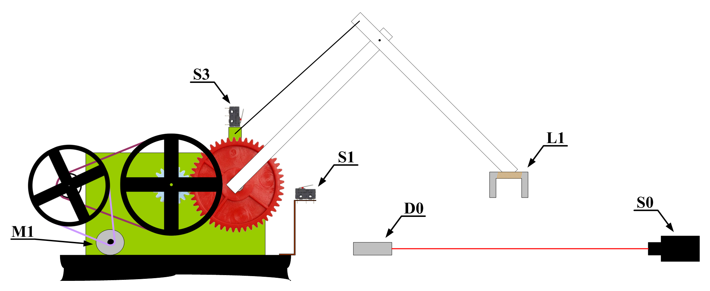
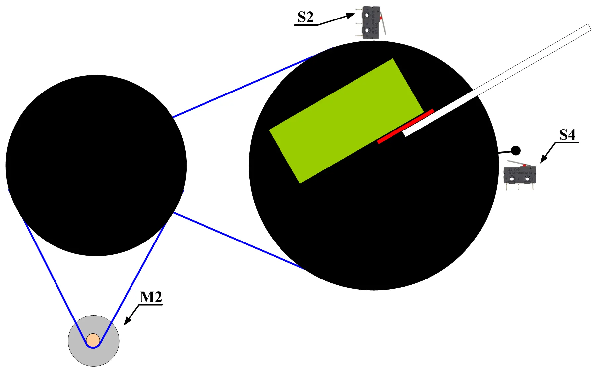
Das Projekt besteht aus einem Arm, der sich nach oben und unten bewegen, nach rechts und links drehen und einen Elektromagneten ein und ausschalten kann. Es wurde ein Untersetzer mit vielen Riemenscheiben und Riemen entworfen, und am Ende muss ein Zahnrad angebracht werden, da sich die Riemenscheiben und Riemen aufgrund des Gewichts des Arms bewegen können. Die Funktion dieses Untersetzers besteht darin, die Motordrehzahl zu reduzieren und gleichzeitig das Drehmoment zu vervielfachen, um die schwere Last zu heben.
Elektrische Steuerung :
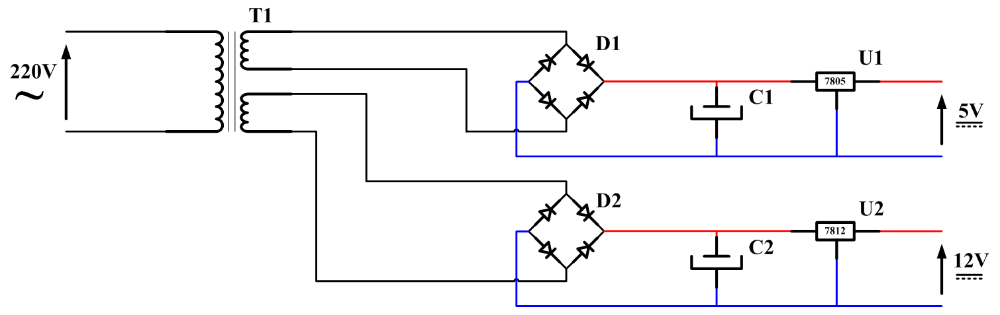
Das Projekt benötigt eine Spannung von zwölf Volt für den Leistungsteil und fünf Volt für den Steuerungsteil. Daher wurde ein Transformator von zweihundertzwanzig auf zwölf Volt verwendet, und dieser Transformator enthält zwei Ausgangswicklungen. Um die Spannung von Wechselstrom in Gleichstrom umzuwandeln, wurden für jede Wicklung ein Diodenbrückengleichrichter sowie ein Kondensator zur Glättung der Spannung und ein Spannungsregler zur Stabilisierung der Spannung auf einen bestimmten Wert eingesetzt.
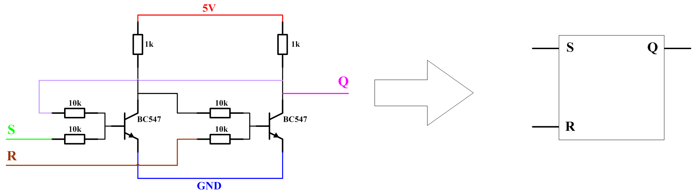
Es wurde ein roter Laserstrahl verwendet, dem auf der anderen Seite ein Widerstand gegenübersteht, dessen Wert sich mit der Menge des darauf fallenden Lichts ändert. Wenn kein Objekt den Laserstrahl unterbricht, leitet der Widerstand den Strom zur Basis des Transistors und sorgt dafür, dass der Ausgang mit Masse verbunden wird. Wenn ein Objekt den Laserstrahl unterbricht, steigt der Wert des Widerstands an und der Transistor verhält sich wie ein offener Stromkreis, wodurch die Ausgangsspannung fünf Volt beträgt.
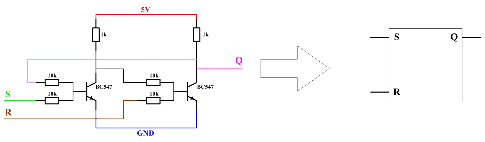
Der Steuerungsteil benötigt einen Speicher mit einem Start und einem Stoppeingang sowie einem Ausgang, der seinen Zustand je nach der zuletzt aktivierten Aktion, also Ein oder Aus, immer beibehält. Dieser Speicher ist ein RS Flipflop, das mit Transistoren aufgebaut wurde und als Simulation eines GRAFCET Systems dient. Da der Robot vier Bewegungen ausführt, wurden vier solcher Einheiten gebaut.
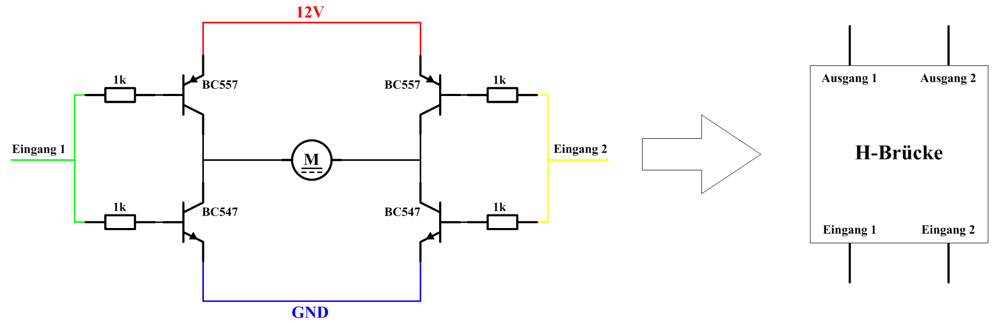
Der Strom aus den Speichermodulen reicht nicht aus, um die Motoren zu betreiben, weshalb eine Schnittstelle beziehungsweise ein Treiber zwischen dem Steuermodul und dem Motor entwickelt wurde. Diese Schnittstelle erhöht nicht nur Spannung und Strom passend für den Motor, sondern kann auch die Drehrichtung des Motors umkehren.
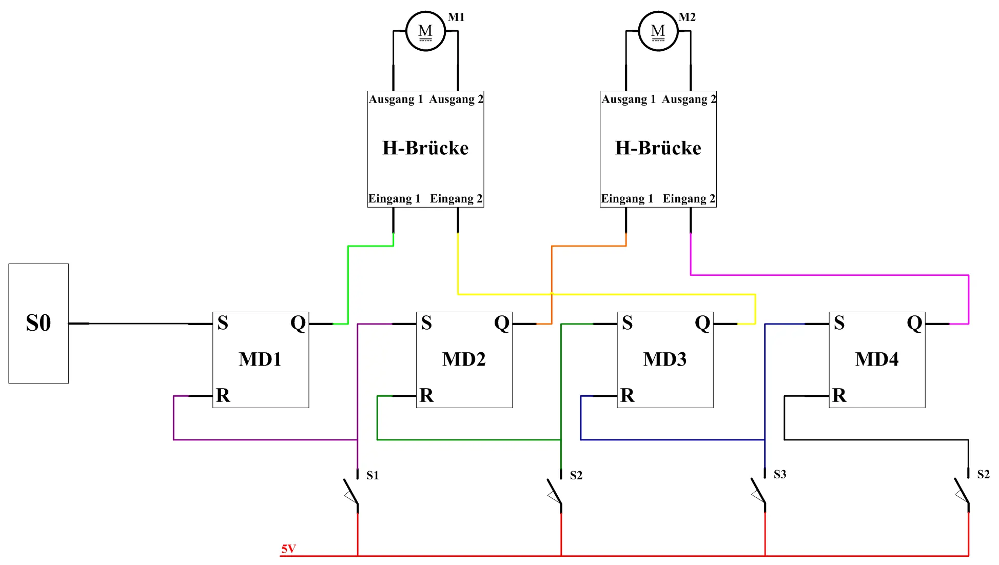
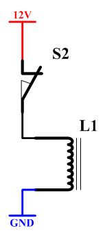
Der erste Motor M1 bewegt den Arm vertikal, begrenzt durch Endschalter. Bei der Laserunterbrechung gibt der Sensor S0 fünf Volt aus, um das erste Modul MD1 zu aktivieren und den ersten Motor M1 bis zum Erreichen des ersten Sensors S1 in die erste Richtung zu drehen. Danach stoppt das erste Modul MD1 und das zweite Modul MD2 wird aktiviert, um den zweiten Motor M2 in die erste Richtung zu drehen, während gleichzeitig die Magnetspule bestromt wird, um das Metallstück anzuziehen. Wenn der zweite Motor M2 den zweiten Sensor S2 erreicht, stoppt das zweite Modul MD2 und das dritte Modul MD3 wird aktiviert, wobei ein Öffnerkontakt des zweiten Sensors S2 den Strom zur Spule unterbricht, damit das Metallstück abfällt, während sich der erste Motor M1 in die entgegengesetzte Richtung dreht, um den Arm zu heben und den dritten Sensor S3 zu betätigen. Der dritte Sensor S3 stoppt das dritte Modul MD3 und aktiviert das vierte Modul MD4, um den zweiten Motor M2 in die Ausgangsposition zurückzubringen. Schließlich stoppt die Betätigung des vierten Sensors S4 die Bewegung, sodass die Maschine im Standby Modus auf die nächste Laserunterbrechung wartet.
Bagger :
Mechanischer Aufbau :
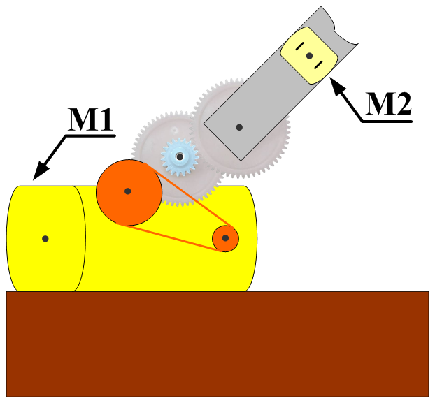
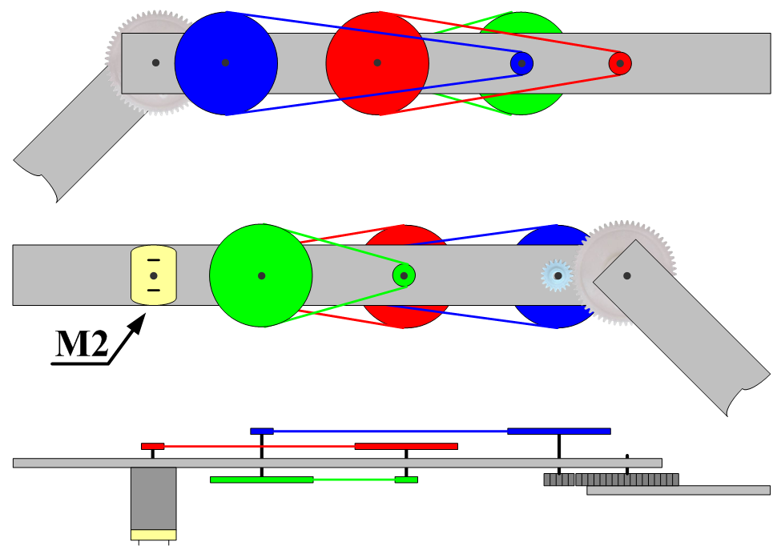
Der Arm zeichnet sich durch die Fähigkeit aus, sich nach oben und unten zu bewegen und den Bohrvorgang mithilfe von zwei Motoren M1 und M2 sowie einer Gruppe von Riemenscheiben und Riemen auszuführen, um die Motordrehzahl zu reduzieren und das Drehmoment zu vervielfachen. Am Ende der Riemenscheiben und Riemen befinden sich Zahnräder, um unerwünschte Bewegungen zu vermeiden, die durch das Gewicht der Last und des Arms verursacht werden.
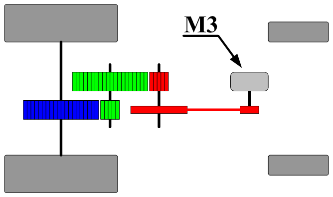
Diese Maschine bewegt sich ausschließlich vorwärts und rückwärts mithilfe eines Motors M3 und einer Gruppe von Zahnrädern, um die Vorschubbewegung präzise auszuführen.
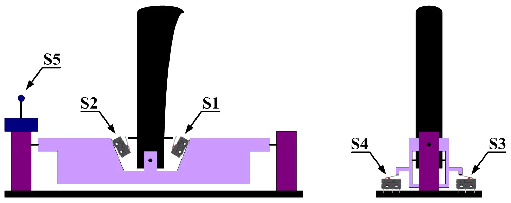
Die Steuereinheit besteht aus einem Arm, der nach vorwärts, rückwärts, rechts und links bewegt werden kann, wobei jede Richtung einen Druckknopf enthält. Jeweils zwei Tasten betätigen den Motor in einer unterschiedlichen Richtung, um eine direkte manuelle Steuerung der Maschinenbewegung zu gewährleisten. Die Taste S5 ist eine Taste mit drei Positionen und steuert den dritten Motor M3, um die Maschine vorwärts und rückwärts zu bewegen.
Elektrische Steuerung :
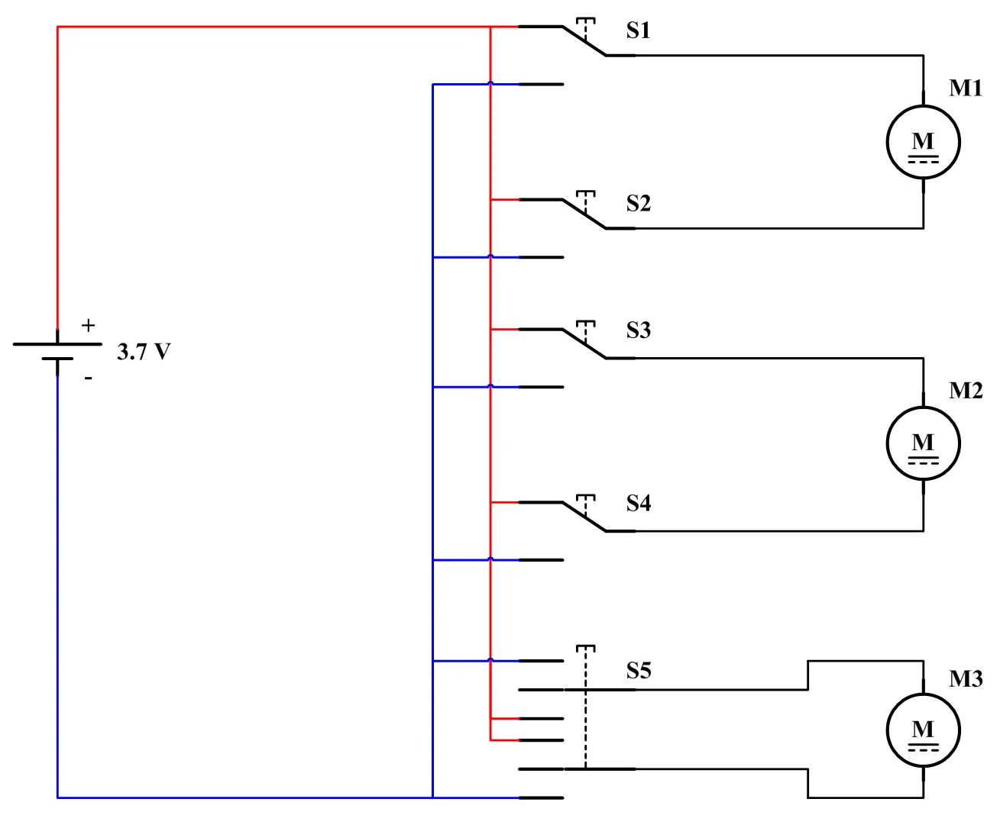
Die elektrische Schaltung besteht aus einer Spannungsquelle von 3.7 Volt, die mit mehreren Drucktasten (S1, S2, S3, S4, S5) verbunden ist, welche die Steuerung von drei Motoren (M1, M2, M3) regeln. Diese Schalter ermöglichen eine direkte manuelle Steuerung der Motorbewegungen in die jeweiligen Richtungen gemäß dem Schaltungsdesign.